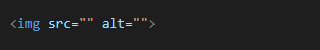
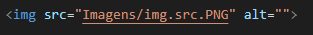
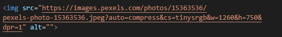

Como fazer para inserir uma imagem em seu código HTML, bem como básico de semântica (que ajuda muito a raquear seu site nos mecanismos de busca SEO) e resposividade (basicamente adaptar sua imagem a diferentes tamanhos de tela) das imagens.
TAG img:

src="" o conteúdo a ser inserido dentro das áspas deve ser uma imagem, ela pode provir tanto de sua própria biblioteca ou através de um link na internet.
Com imagem de diretório local:

O uso de Ctrl + Space
Com URL:

alt=""
Arquivos in loco Url uso do Ctrl + Space explicar como preenchê-los Imagem Dinâmica A importância de imagens dinâmicas (usar imagem da tag picture e source juntas) A tag picture e semântica A tag source (usar imagem) explicar os componentes explicar como preenchê-los